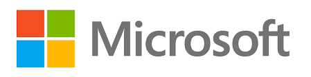

История
Компания начинает свою историю с 1975 года, когда друзья-студенты Гарварда Билл Гейтс и Пол Аллен, прочитав опубликованную 1 января 1975 года в журнале «Popular Electronics (англ.)» статью о новом персональном компьютере Altair 8800, разработали для него интерпретатор языка Basic. Через месяц, 1 февраля, было подписано лицензионное соглашение с компанией Micro Instrumentation and Telemetry Systems (англ.) (MITS), производителем этого ПК, об использовании Basic в составе ПО для Altair. Свою компанию они думали назвать «Аллен и Гейтс», но посчитали, что это больше подходит для юридической конторы, и тогда Пол предложил — «Micro-Soft», от «microcomputer» и «software». Свой первый год новая компания, в которой работало три человека, закончила с оборотом $16 005. (для сравнения: в 2000 году выручка корпорации составила $25,3 млрд, а прибыль — более $7,3 млрд).
В начале 1980-х годов пути двух основателей компании разошлись: по воспоминаниям Аллена, в то время как он не хотел посвящать всю свою жизнь Microsoft, Гейтс был полностью сконцентрирован на работе и развитии компании. По настоянию Гейтса, партнёры неоднократно пересматривали свои доли в бизнесе, причём Аллен уступал в пользу Гейтса. Аллен писал в своей книге:
Мой партнёр хотел заграбастать как можно больше и уже ничего не выпускал из рук. С этим я примириться не мог… Тогда я подумал, что в какой-то момент должен буду уйти.
В 1981 году компания выпускает MS-DOS, которая являлась переименованной версией 86-DOS, написанной Тимом Патерсоном из Seattle Computer Products. Разработка 86-DOS заняла всего шесть недель и представляла собой клон CP/M от Digital Research, портированный для использования на процессоре 8086 и содержащий всего два отличия от оригинала: улучшенную логику буферизации дисковых секторов и новую файловую систему FAT12. Первая версия 86-DOS вышла в августе 1980 года. Согласно подписанному в ноябре 1980 года договору с IBM, Microsoft требовалось предоставить операционную систему для нового компьютера IBM PC, основанного на процессоре Intel 8086. Для этого Microsoft в мае 1981 года наняла Тима Патерсона для завершения адаптации 86-DOS к прототипу IBM PC, а затем в июле того же года полностью выкупила права на 86-DOS 1.10 за $75 тыс. Microsoft сохранила нумерацию версий, но переименовала ОС в MS-DOS. В августе 1981 года лицензированная корпорацией IBM MS-DOS 1.10/1.14 под наименованием PC DOS 1.0 начала поставляться с новыми персональными компьютерами, IBM PC.
В 1983 году Аллен покинул Microsoft, продав свои акции по $10 за штуку. Эта сделка в итоге сделала его одним из самых богатых людей в мире: в 2011 году он занимал 57-е место в списке журнала Forbes с капиталом в 13 млрд долл.
Далее Microsoft работает над совершенно новой операционной системой, с графическим интерфейсом пользователя, принципы которой уже развивались у Xerox и, особенно эффективно, у Apple. Сотрудничество с IBM продолжалось, и 20 ноября 1985 года появилась новая операционная система Microsoft Windows. Так началась эпоха Windows — операционная система, прославившая и сделавшая богатейшим человеком Билла Гейтса.
Продукты
Раскрыть
Операционные системы
- Xenix
- MS-DOS
- Windows
- Windows 3.x
- Windows 95, Windows 98, Windows ME
- Windows NT, Windows 2000, Windows XP, Windows Vista, Windows 7, Windows 8, Windows 10
Офисные приложения
- Microsoft Office
- Основные - Word, Excel, Outlook, PowerPoint, OneNote
- дополнительные - Access, InfoPath, Publisher, FrontPage
- Для Mac OS - Word, Excel, Outlook, PowerPoint, Entourage
- Microsoft Works